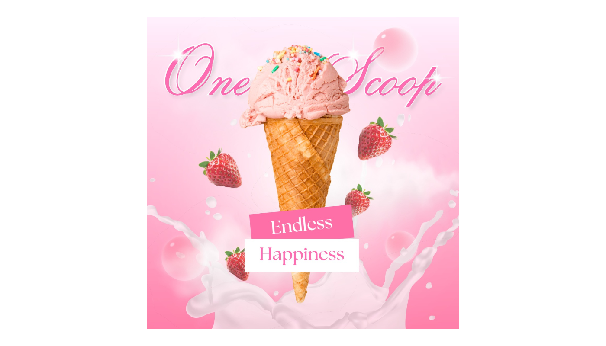
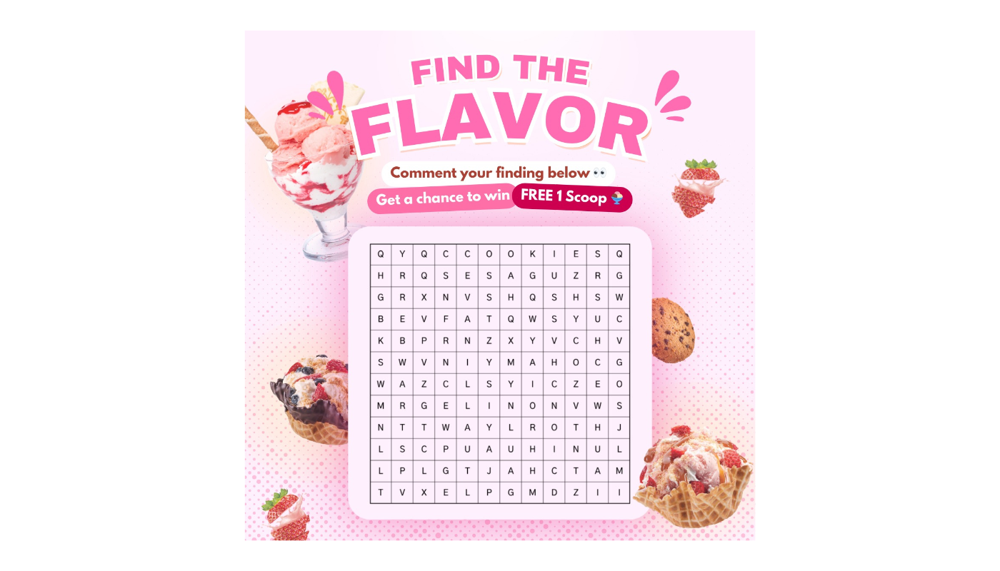
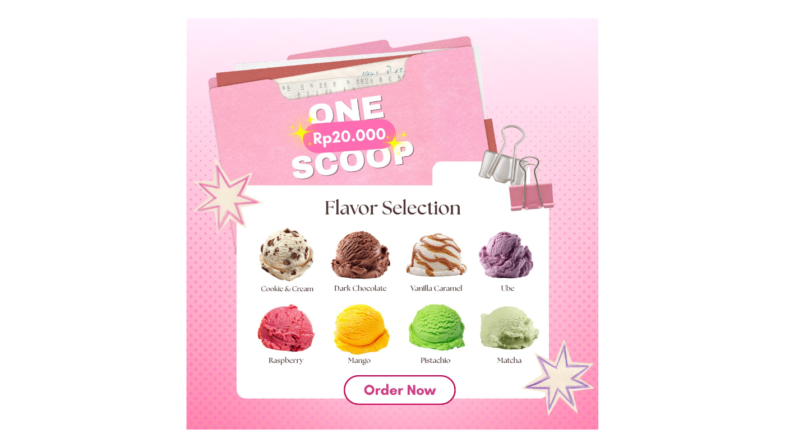

Ice Cream Social Media Mockup

Project Overview
This project explores a playful and visually engaging Instagram campaign concept for an ice cream brand, designed to strengthen brand identity while increasing audience interaction through visually appealing content.
The design direction focuses on soft pastel aesthetics, dreamy compositions, and dessert-inspired visual elements to create a youthful and cheerful atmosphere. Through layered compositions, floating objects, gradients, and playful typography, the campaign aims to evoke feelings of happiness, sweetness, and indulgence.
Each feed post was designed with a different communication purpose while still maintaining a consistent visual language across the overall campaign. The project demonstrates how branding, storytelling, and marketing strategy can be combined into cohesive social media visuals that feel both engaging and memorable.
Design Goal
Building Engagement Through Visual Storytelling
The challenge was to create an Instagram feed that not only promotes products visually, but also encourages audience interaction and strengthens emotional connection with the brand.
The campaign needed to balance aesthetic consistency with communication clarity. Each post had to feel unique and interactive while still supporting a cohesive brand identity across the entire feed layout.
Creative Process
The design process focused on creating visually rich compositions with strong branding consistency, clear visual hierarchy, and interactive social media concepts.
Visual Direction Exploration
Explored pastel color palettes, dessert-inspired visuals, playful typography, and dreamy compositions to establish the overall campaign mood and branding style.
Feed Layout Planning
Planned the Instagram feed structure to ensure visual consistency between posts while allowing each design to communicate different campaign objectives.
Emotional Branding Post
Designed the first post to focus on emotional branding through the concept of “Endless Happiness,” using floating strawberries, milk splashes, soft lighting, and layered compositions to create a fresh and delightful atmosphere.

Interactive Social Media Content
Created a “Find the Flavor” interactive post designed to increase engagement and encourage audience participation through comments and playful interaction mechanics.

Promotional Feed Design
Designed promotional layouts showcasing available ice cream flavors with clearer product hierarchy and call-to-action elements while maintaining the playful visual identity of the campaign.

Key Design Focus
- Developed a cohesive Instagram feed visual system.
- Applied visual storytelling principles for emotional branding.
- Created interactive social media content to encourage engagement.
- Maintained consistent typography, color palette, and visual hierarchy.
- Combined branding, marketing, and aesthetic visuals into one campaign concept.